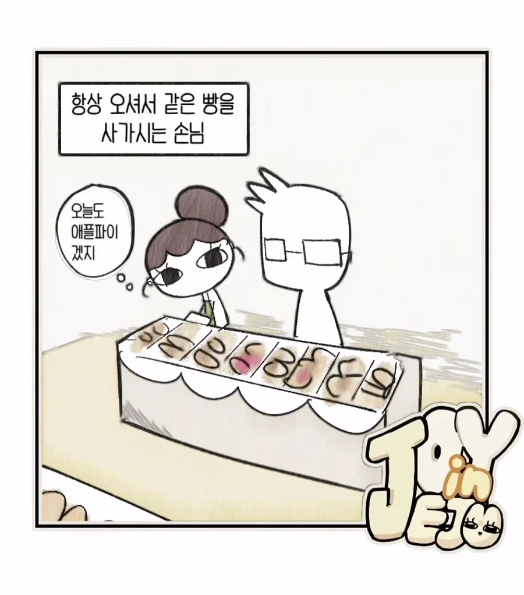
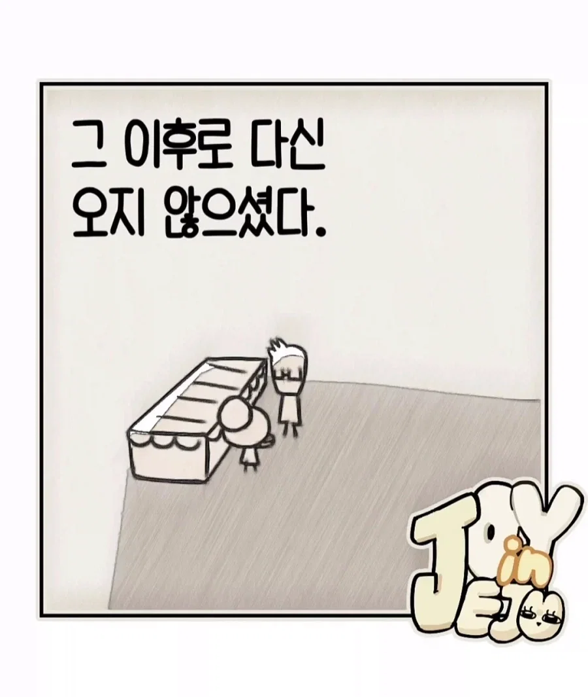

야야 저기 애플파이온다
저새기는 맨날 저거만 퍼먹더라 (사장)
그러게요 딴거도 좀 쳐먹지(알바)
다른거 고르려고 보고 있을수있는데 왜 설쳐
생각해보니 애플파이를 살면서 한 번도 먹은 적이 없네.
혹시 신생아니?
두쫀쿠는 먹었거든? 쒸익쒸익
후렌치파이 과자 먹어본적 없어??
후렌치파이 사과맛이랑 애플파이랑 똑같은거야??
애플파이 시발 별거 없었네
그거랑 비슷한 느낌인데 훨씬 고급스러움 ㅇㅇ
파이부분이 후렌치파이보다는 더 폭신하고 촉촉하고
쨈도 사과 과육 남아있는 상태로
별거 있었구나...
애플파이를 한번도 안먹어본놈에게 후렌치파이 사과맛을 비비는건
시발 니가 너무한거지
이제 쟤 머릿속에 애플파이=후렌치파이가 됐잖아
미용실 아줌마들이 너무괴로움...
한번은 이발소갔더니 정치얘기해서 그뒤로 그냥 아줌마들한테 감...
한번은 미용실 친한척하고 얘기하다가
갑자기 무슨 세탁기를 옮겨달래
돌쇠 취급 띠용
다신 안감
그런거 몇번겪으면 미리차단하는거지
???: ㅋㅋ 봐 이러면 다신 안온다고
택시타면 심심하면 정치 이야기시도함 ㅋㅋ
먼저 말걸어오시면 편하게 대화함
가끔 성질부리는 아줌마 사장이 있어서 ㅋㅋㅋ
대화가 늘 좋은건 아님
말걸어오길래 대화좀 하는데 갑자기 이것저것 지 승질나는거 다 얘기하며 은근 반말투임
그러면 ㅋㅋㅋ아...어쩔 하고 안감
부끄부끄
아까 낮에 한의원 갔는데 슬리퍼 갈아 신는동안 접수 끝내놨더라...

빵 고르는 내내 밀착마크한 것도 아닌데 왜 저러는거야
그렇게 쳐다보시면
저것도 디테일한 조건이 있는데 말건사람이 본인 맘에 드는 사람이면 받아줄 확률 높고 고르는 메뉴가 이곳이 독보적이라 다른곳에서 대체가 안되면 계속 올 확률 또 상승 근데 맛도 펑범하고 걍 가까워서 온거고 물어보는 사람도 별관심없는 사람이면 관심이 귀찮아서 딴데간다 이게 맞을듯 물론 내 주관적 의견
정말주관적이군 사람안가림
회피형의 끝임 관측되지 않길 바라는 슈뢰딩거 고양이 현대인들…현실에선 캐시삭제가 안되니까 그냥 다른 데 가버리는걸 택함
난 극I인데도 저정도는 좋던데
나도 INFJ고 회피형이긴한데 점원 응대는 그냥 이사람도 일 열심히 하는거구나 싶고 친절한거라고 생각해서 좋더라
에헤이
관측하는 순간 존재가 사라지는 단골 ㄷㄷㄷ
아마 99%는 잘 반응할거고
1%정도만 다시 안올듯
친구중에 딱 한명 저런 애 있는데
불편한 관계의 시작을 하고 싶지않다고함
근데 그런 애들이 하나에 꽂히면
폭주기관차처럼 꽂히는거만 보고달리는데
자신의 범위밖에 있어야할 존재가
침범하는 순간 상태가 깨지는거 같음.
날 지켜보지 마시오
좋은사람있고 아닌사람있는거지 별 호들갑은